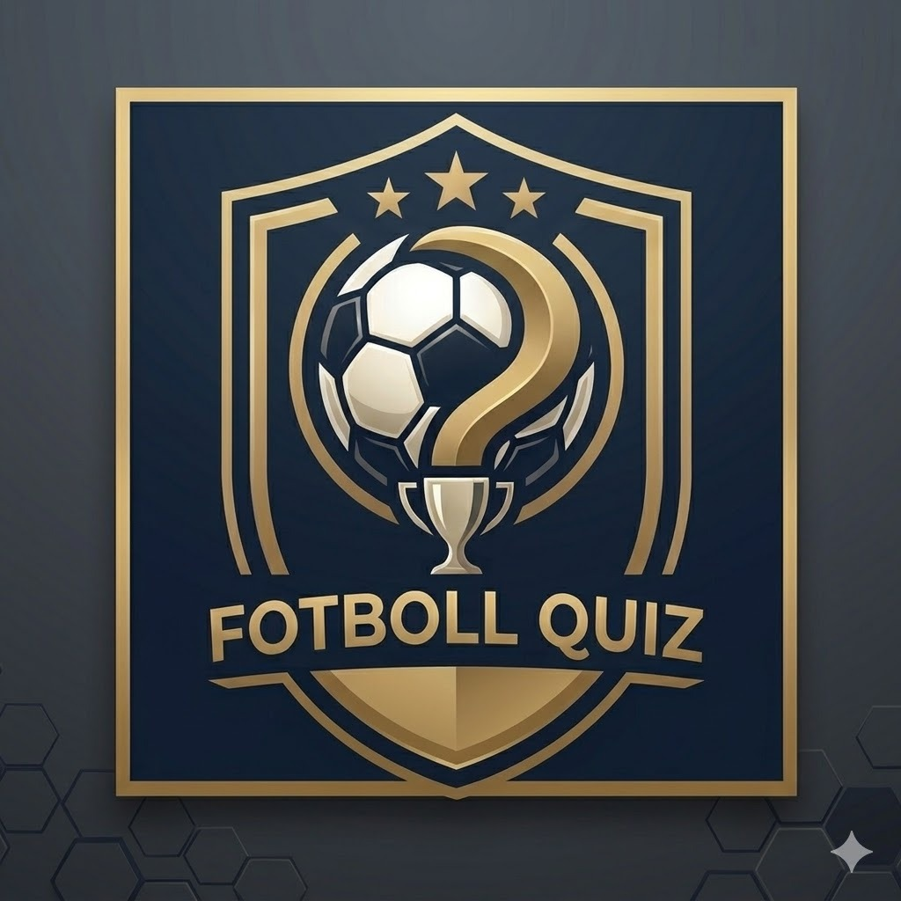
Unity • Mobil Oyun
Kapalı Betada

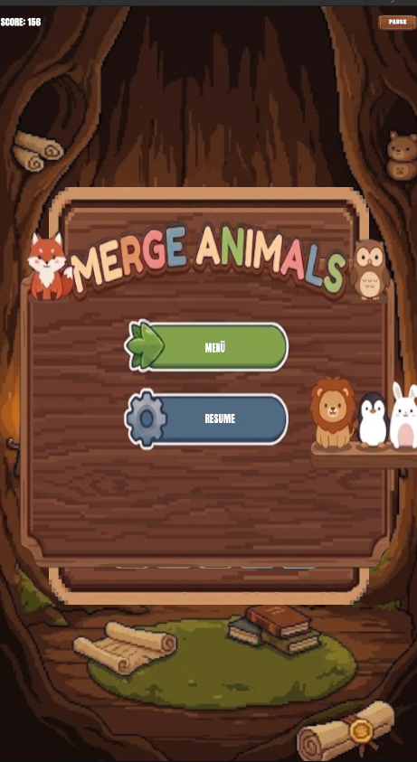
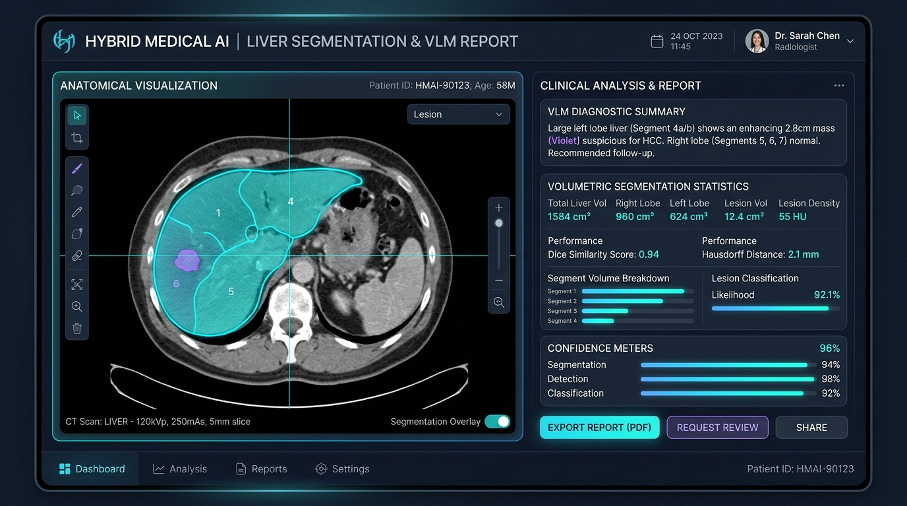
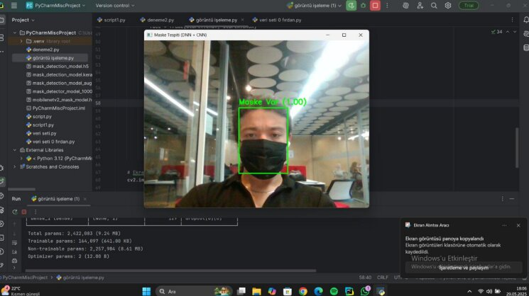
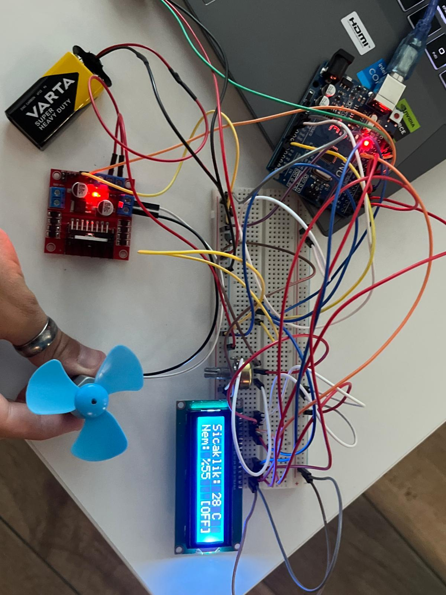
Bilgisayar Mühendisliği 4. sınıf öğrencisiyim. Yazılım serüvenimde en çok keyif aldığım iki ana alan var: derin öğrenme / yapay zeka modelleri eğitmek ve Unity ile bağımsız oyunlar üretmek.
Staj dönemimde kurumsal bir medikal yapay zeka projesinin çekirdek ekibinde yer aldım. Buradaki ana görevim, MR taramalarından karaciğer tümörlerini (HCC) tespit eden segmentasyon modelinin eğitimi, LLM entegrasyonu ve otomatik klinik raporlama mimarisinin kurulmasıydı. Şu anda ise üniversite bitirme projemiz olarak arkadaşlarımla birlikte yapay zeka ile üretilmiş sahte videoları tespit eden bir mobil uygulama geliştiriyoruz.
Oyun geliştirme tarafında Unity üzerinde 4-5 adet çalışan oynanabilir demo ürettim ve şu an Google Play Store'da kapalı betada 2 adet aktif oyunum bulunuyor. Temel hedefim; önümüzdeki 5-6 ay içerisinde oyunlarımı Steam ve Play Store üzerinden küresel pazara ve son kullanıcıya sunmak.
Kapalı Beta Süreci: Google Play Store'da kapalı betada olan 2 oyunumdan biridir. Denemek ve test kullanıcısı olmak isterseniz aşağıdaki butona tıklayıp Gmail adresinizi iletmeniz yeterli.
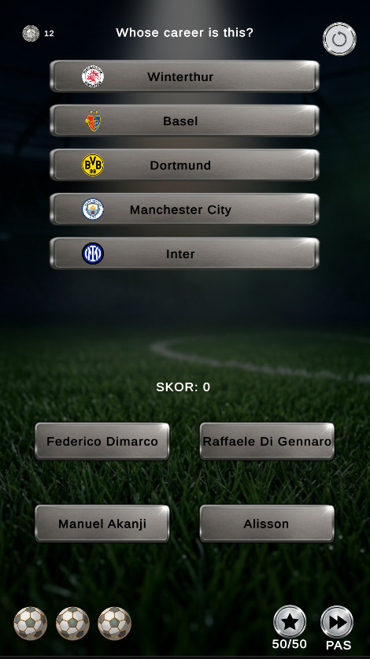
Oyun İçi Soru & Skor Ekranı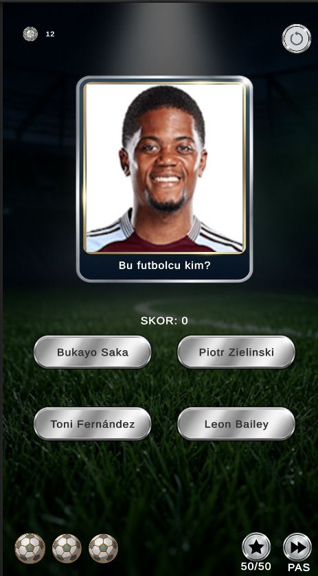
Google Play Console Beta PaneliUnity motoru ve C# ile geliştirilmiş, futbol dünyasından verileri dinamik soru havuzuna dönüştüren mobil trivia oyunu. Python BeautifulSoup ile transfer ve futbolcu istatistikleri kazınarak JSON formatında oyuna entegre edildi. 5-6 ay içinde genel kullanıcıya sunulması hedefleniyor.
2. Kapalı Beta Oyunum: Google Play Console üzerinde kapalı betada olan 2. oyunumdur. Test kullanıcısı olup denemek isterseniz aşağıdaki butona basıp Gmail adresinizi iletebilirsiniz.
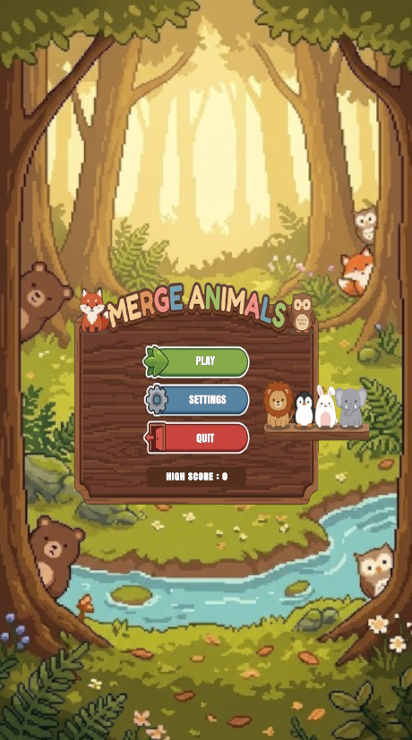
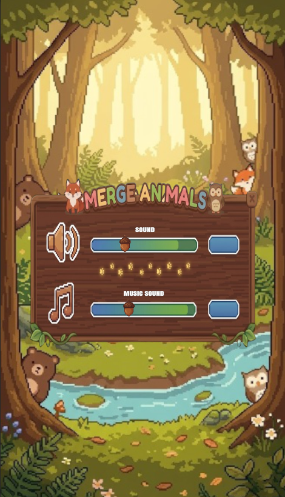
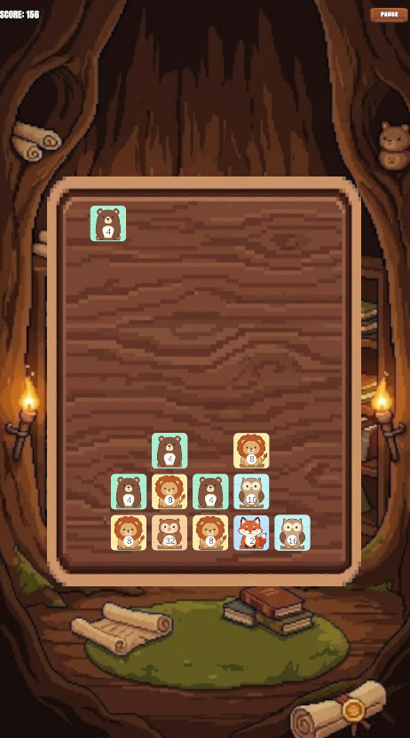
Bu projeyi iki temel amaç doğrultusunda sıfırdan geliştirdim:
Staj dönemimde çekirdek geliştirme ekibinde yer aldığım endüstriyel yapay zeka projesi. MR taramalarında karaciğer lezyonlarını saptayarak hekimler için teşhis ve klinik raporlama sürecini otomatikleştiren web tabanlı bir karar destek platformudur.
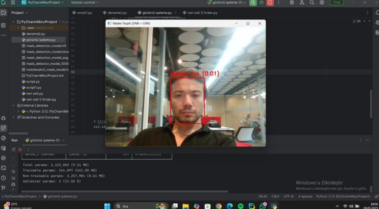
Maskesiz Yüz Tespiti (Kırmızı Uyarı)Canlı kamera veya video akışından gelen kareleri gerçek zamanlı tarayarak insan yüzlerini çerçeveleyen ve eğitilen konvolüsyonel sinir ağı (CNN) ile kişilerin tıbbi maske takıp takmadığını yüksek kare hızında (FPS) sınıflandıran Python projesidir.
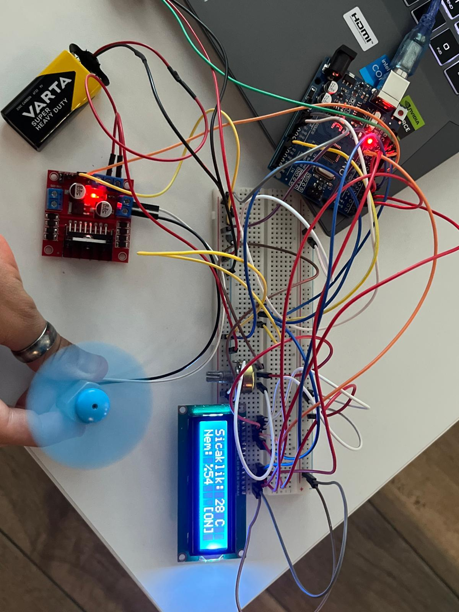
Röle, Fan ve Sıvı Pompası Kontrol DevresiToprak nemi ve sıcaklık gibi çevresel verileri anlık analiz ederek bitkinin ihtiyacı olduğunda röle üzerinden su motorunu ve soğutma fanını otonom olarak devreye sokan mikrodenetleyici tabanlı donanım mimarisidir.